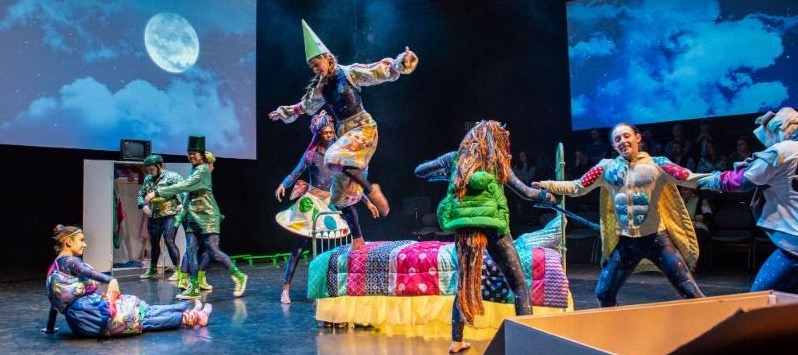

Storytelling through multimedia and movement
As a double degree student, I am currently studying journalism and dance at the University of Maryland, College Park. I have always had a passion for storytelling, whether sharing my own stories and others'. Video and dance are my ideal methods for doing so.
As a journalism major with a broadcast focus, my coursework has focused on writing and producing for television. I have focused my assignments and coverage on arts and entertainment, or cultural happenings in the College Park and DMV area. While I enjoy focusing on videography now, I first fell in love with written work. I still write for The Diamondback's Diversion's section covering A&E.
I began dancing at the age of three, and have been pursuing the art seriously since the age of fourteen. I have trained in a variety of styles including modern, tap, ballet and other contemporary styles. Now at the University of Maryland, I have studied under the direction of esteemed faculty including Alvin Mayes and Adriane Fang.
I have enjoyed combining my passions for reporting and dance through communications opportunities. As a dance marketing intern, and former communications assistant to the College of Arts and Humanities, I continue to find new ways to jointly pursue both my interests.
Looking forward, I am pursuing internships related to arts and culture news coverage, arts administration, and dance/arts education.